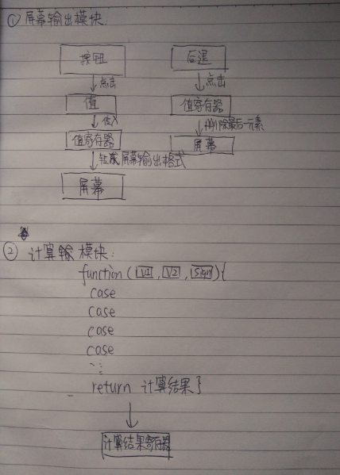
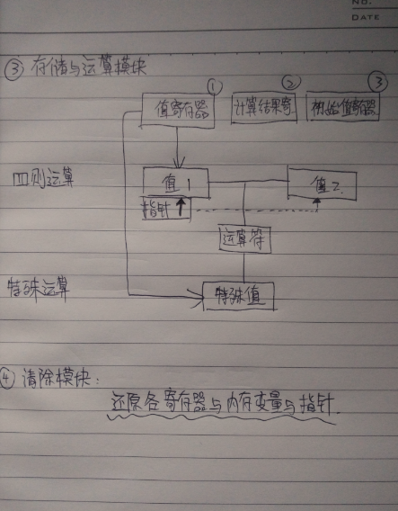
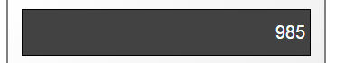
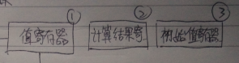

这个小项目是在极客学院上做任务的时候完成的一个小项目，也是自己完成的第一个工具。虽然简单，但是能从中学到很多东西。完成一个JS计算器工具制作，你会需要HTML、CSS以及JS的知识。先展示一下完成的工具。
制作这么一个计算器工具你将会学到什么？
通过制作一个计算器，你会学习到如下几点：
1. 通过捕获标签元素的值传入JS脚本
2. 学会如何设计一个简易的IO(输入输出)系统
3. 掌握基本的HTML、CSS与JS的知识
4. 体验从设计功能 - 逻辑结构构思 - 组织代码框架 - 实现功能
内容目录
-- 设计功能
-- 逻辑结构构思
第一节：设计功能
在开始动手做计算器之前，首先需要想好要做什么功能，根据成品你会发现功能并不多，但是从最核心最基础的功能入手，实现，再不断更新，这也是软件工程自我迭代的方式。（意思就是说不要嫌弃功能简单少就不认真做）好了，那么让我们来看一下制作这个计算器工具需要完成哪些功能需求。
A. 实现正负整数与小数运算
B. 实现四则运算与特殊运算交替
C. 实现连续运算（最难点）
D. 实现后退与清除功能
第二节：逻辑结构的构思
唠叨几句，我之前上过一节北大计算机老师的计算机导论的课，那个老师非常厉害，教得也非常好。他告诉我些程序最重要的是1.模块化编程。2.可读性。我觉得很有道理。
于是，我把整个计算器运作的流程拆分成四个模块：屏幕输出模块、计算模块、存储于运算模块、清除模块。当然你也可以有其他的拆分方法。但是在拆分过程中，你就会发现一开始毫无头绪的事情，变得好像有那么一点调理了，每个模块因为承担了不同的功能，所以在编程每个模块时思路也更加清晰了。
这四个模块其实就组成了一个基础的IO系统，有输入与输出，计算模块与运算储存器。上几张手稿来理清每个模块的逻辑结构。
 接下来我们来分别分析一下每个模块的功能:
屏幕输出模块：
关键：值寄存器，数据结构：['','',''....]
思路是把屏幕中的看做是数组来处理，也就是说屏幕中的“985”，其实是一个数组转化而来的。这样的话，后退功能也就迎刃而解了。模块的整体逻辑就是拿到输入到脚本的值，然后把值传到值寄存器里，然后通过处理同步输出到屏幕上。
计算模块：
计算模块其实比较简单，就是按照传入的值和运算符，根据运算符进入不同的分支进行不同的数学计算就行了。要说有什么注意点，就是传入参数时四则运算和特殊运算需要的值个数不同。
存储与运算模块：
这个模块是最难的一个模块，也是功能最多的。 这里承担了一个功能难点，就是如何实现连续计算。 我先图解一下，值寄存器（与屏幕输出模块共有一个的）、计算结果寄存器、初始值寄存器，这三个是平级的三个寄存器。用来向计算变量传值。值1与值2是用于四则运算用的计算变量，另外四则运算部分需要一个指针，设定当前需要往值1还是值2传值。特殊值是用于做特殊运算的计算变量。运算符变量是公用的，用来存储计算用的运算符号。 实现连续计算功能的关键在于设定三个寄存器的优先级，优先级从左往右依次递减。
即当值寄存器有值时就传寄存器的值，因为表示有输入数字的操作；当值寄存器没有值，计算结果寄存器有值时，表示没有输入数字操作，但是要求运算，需要使用之前的结果。初始值用于什么都没有输入时，就要求计算的情况。
这样输入好计算用的值以后，把参数传入到计算模块里面，就可以输出结果了。
清除模块：
这是最简单的模块，主要嵌套在存储模块用，还有实现清除按钮的功能。虽然简单，但是难点在于你在哪一步程序的地方，清除那些变量。这个对最终功能实现影响很大。
好了，通过这四个模块的梳理，一个简易计算器就完成了。是不是还挺酷？有心想看看源码的同学尽管拿去。源码地址：https://github.com/lihang-huang/calculator
注：目前由于博客还没有搞好评论功能，如果有任何问题与建议可以通过给发邮件来联系我，谢谢！
2016年9月25日